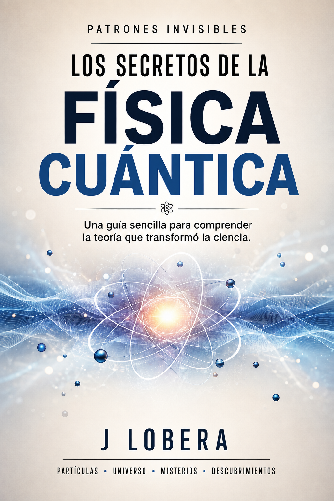
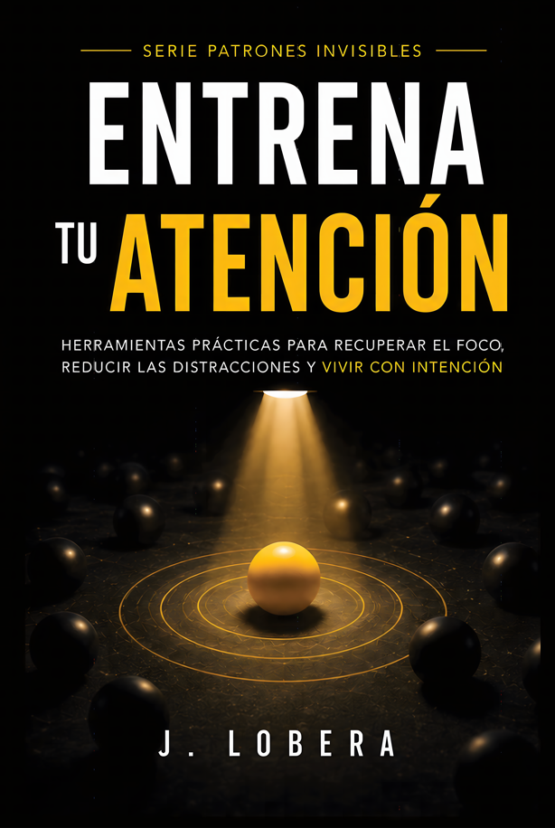
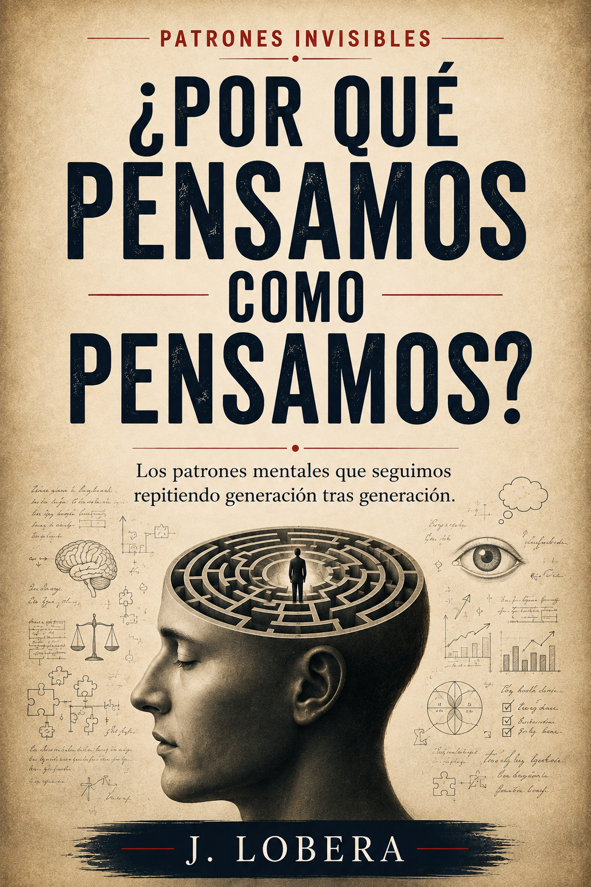
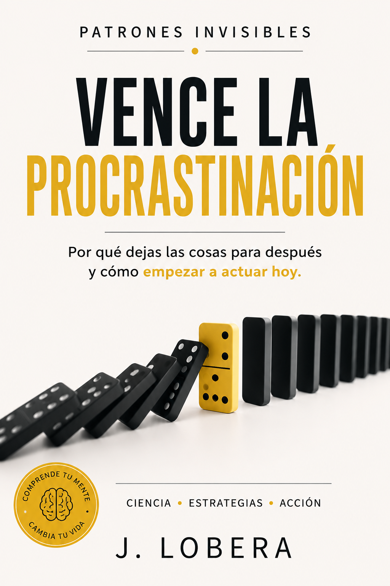

01 · Finanzas
Aprende a gestionar tu dinero
Guía práctica para ahorrar, organizar tus finanzas e invertir con inteligencia.
Una colección de libros para comprender los mecanismos invisibles que influyen en nuestra mente, nuestras decisiones, nuestra sociedad y nuestra forma de vivir.
Cómo pensamos, atendemos y tomamos decisiones.
Ideas complejas explicadas de forma clara.
Los mecanismos que estructuran nuestro mundo.
Conocimiento que puedes llevar a la práctica.
¿Qué patrones invisibles están detrás de aquello que pensamos, decidimos y hacemos?
Guía práctica para ahorrar, organizar tus finanzas e invertir con inteligencia.

Una guía sencilla para comprender la teoría que transformó la ciencia.
Cómo aplicar la filosofía budista para vivir con más calma, claridad y propósito.
Piensa con más claridad. Vive con más propósito.

Cómo entrenar tu atención en un mundo lleno de interrupciones.
El precio oculto de cada decisión.
Los mecanismos invisibles que han construido la civilización.
Cómo los incentivos transformaron una sociedad de reparar en una sociedad de reemplazar.

Los patrones mentales que seguimos repitiendo generación tras generación.
Cómo el entorno, la sociedad y tu propio cerebro moldean las decisiones que crees haber elegido.

Por qué dejas las cosas para después y cómo empezar a actuar hoy.
Tablas, herramientas, plantillas y recursos adicionales para poner en práctica las ideas de los libros.
Selecciona el libro para acceder a sus recursos, herramientas y materiales descargables.
Tablas, ejercicios y herramientas para trabajar los conceptos del libro.
Tablas, plantillas y herramientas para organizar tus finanzas.
Recursos para profundizar y aplicar las ideas del libro.
Material adicional para comprender y explorar los conceptos del libro.
Recursos adicionales para profundizar en las ideas del libro.
Herramientas para analizar decisiones, negociaciones y situaciones cotidianas.
Recursos adicionales para explorar los mecanismos explicados en el libro.
Material adicional para profundizar en las ideas del libro.
Recursos para explorar los patrones mentales tratados en el libro.
Herramientas para analizar cómo influyen el entorno y nuestros patrones mentales.
Herramientas y ejercicios para pasar de la intención a la acción.
Ideas, preguntas y patrones que normalmente pasan desapercibidos. Contenido para comprender mejor cómo pensamos y cómo funciona el mundo.
Visitar el canal